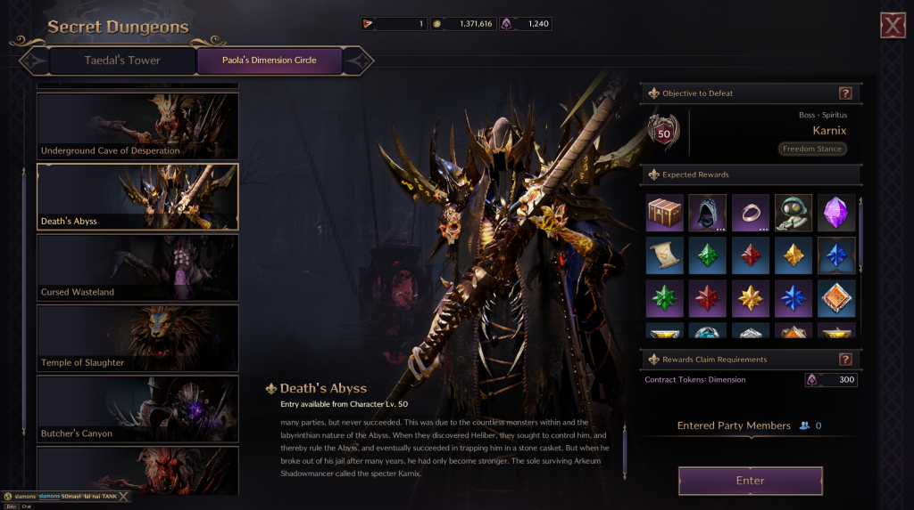
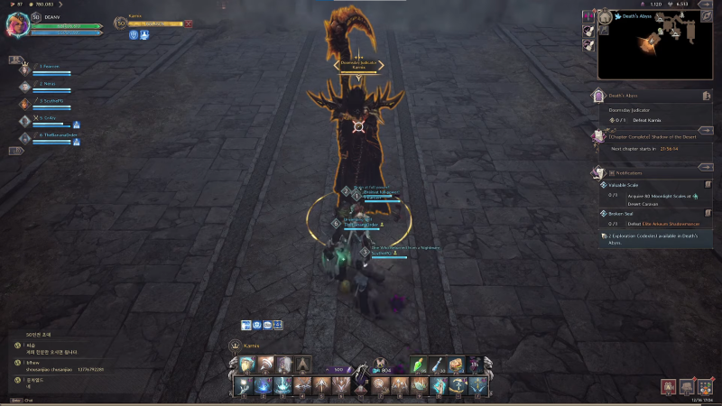
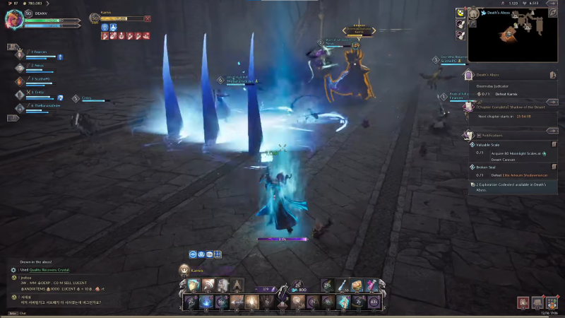
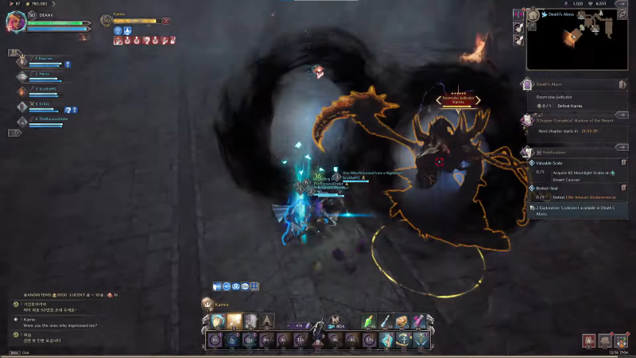
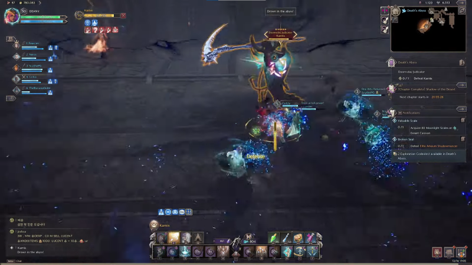
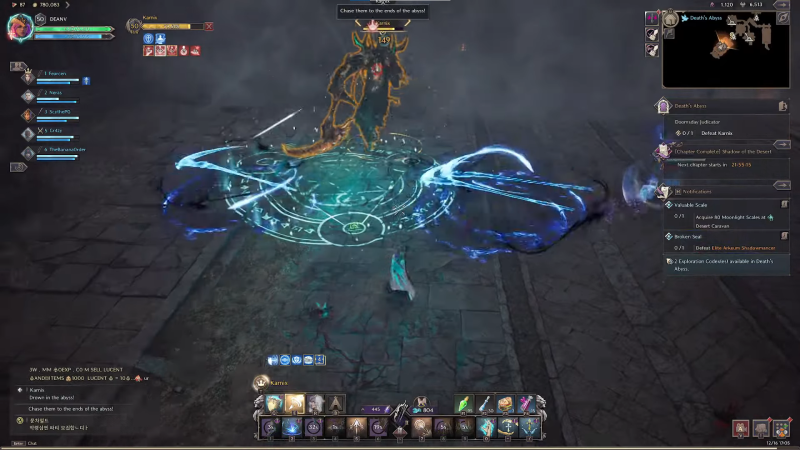
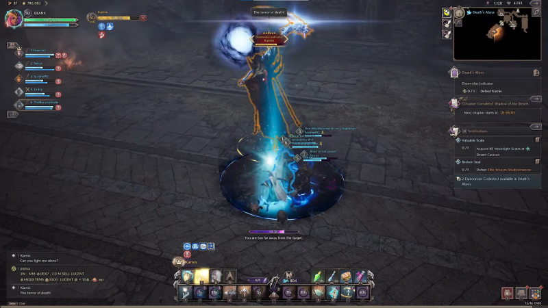

GUIA BOSS DUNGEONS LvL 50

DUNGEONS:
I - DEATH'S ABYSS
LOCALIZANDO KARNIX
Depois de derrotar com sucesso o Capitão do Elite Arkeum Riot Squad Captain, prossiga para a próxima sala, onde você encontrará o Doomsday Judicator Karnix.
HABILIDADES DE KARNIX
Ele possui cinco poderes que são utilizados durante a batalha. Aqui estão seus poderes para ajudá-lo durante a batalha.
PRIMEIRA HABILIDADE
Com sua primeira habilidade, Karnix desfere um soco poderoso que causa muitos danos. Ele começa girando sua foice antes de baixá-la rapidamente para causar danos massivos e realizar o controle de multidão (CC), que deixa os jogadores inconscientes. Uma curva rápida ou uma corrida rápida tirarão você do caminho desse ataque.
SEGUNDA HABILIDADE
A segunda habilidade de Karnix é lançar ataques básicos enquanto se teletransporta. O teletransporte utiliza sua habilidade inicial e percorre uma curta distância, surpreendendo os oponentes. Karnix lança três teletransportes e, em seguida, lança um ataque poderoso e imediato. Embora evitar esta mudança possa ser um desafio, a cooperação é crucial. Para manter o controle da situação, trabalhe com sua equipe para coordenar, virar e evitar a primeira abordagem.
TERCEIRA HABILIDADE
Para a terceira habilidade de Karnix, ele passa por uma breve fase de carregamento, girando antes de liberar rapidamente uma onda elétrica que causa dano de área de efeito (AOE) a seus inimigos. Para ficar ileso, ative uma habilidade de escudo assim que ele lançar o ataque. Isso o ajudará a evitar qualquer dano e a mantê-lo no jogo.
QUARTA HABILIDADE
Para a quarta habilidade de Karnix, ele desencadeia um golpe elétrico que marca seus oponentes. Uma vez marcado, ele libera foices giratórias que seguem o oponente marcado, causando dano significativo ao ser atingido. Você pode simplesmente fugir das foices que o perseguem para evitar sofrer danos. Durante o processo, Karnix se teletransporta para seus oponentes e lança um feitiço azul que atordoa os jogadores. Então uma dica é tentar mirar nos seus jogadores.
QUINTA HABILIDADE
Finalmente, a última habilidade de Karnix envolve marcar um inimigo com uma bolha azul. Após marcar seu oponente, ele carrega sua foice e se teletransporta rapidamente para o alvo marcado, balançando sua foice e causando dano considerável no impacto. Para evitar essa habilidade, sua equipe precisa entrar na bolha azul para evitar qualquer dano.
DROPS:
Ao derrotar o Karnix, você receberá as recompensas descritas no início de sua jornada no Abismo da Morte: LINK COM DROPS ATUALIZADOS! ! !